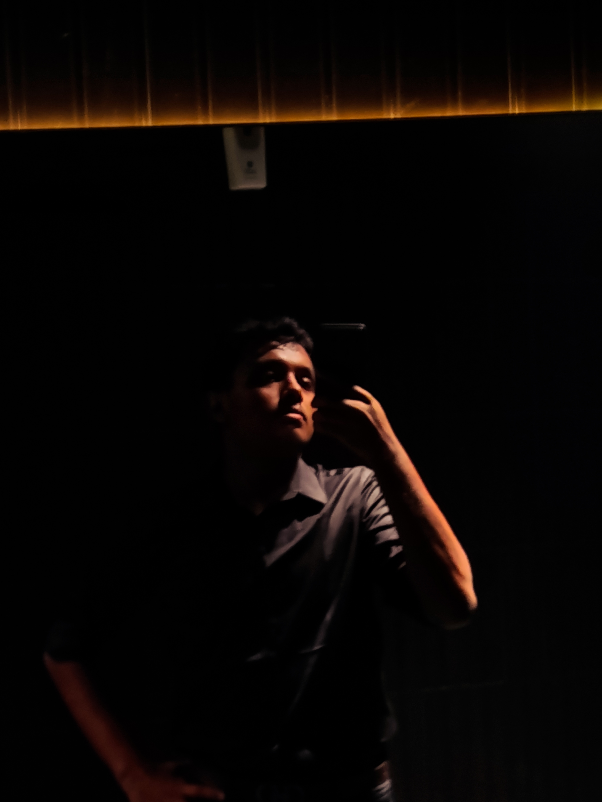

B.Tech Electronics and Instrumentation Engineering Student | Instrumentation & Web Development

| Bharathmusicpro01@gmail.com | |
| Phone | +91 77369 14062 |
| Location | Bengaluru, India |
| linkedin.com/in/bharath-r-7a37b5390 | |
| GitHub | github.com/BharathR101 |
Currently pursuing B.Tech in Electronics and Instrumentation Engineering at Federal Institute of Science and Technology, admitted August 2025 and continuing. Strong foundation in instrumentation, sensors, measurement systems, electronics circuits, and control systems. Experienced in hands-on laboratory calibration, PCB testing, and building responsive HTML/CSS web pages for technical documentation and project presentations.
Federal Institute of Science and Technology — Laboratory Training
Calibrated temperature and pressure sensors for laboratory experiments, improving measurement accuracy and supporting data acquisition activities. Set up and verified instrumentation systems, oscilloscope signal capture, and sensor validation for electrical and control experiments.
College Engineering Labs
Performed PCB testing and electronics troubleshooting for instrumentation experiments. Helped design lab setups using sensors, microcontrollers, and signal conditioning circuits to validate measurement systems and support student project demonstrations.
B.Tech in Electronics and Instrumentation Engineering
Federal Institute of Science and Technology — Aug 2025 to present
Academic Project
Developed a prototype system using Arduino and signal conditioning circuits to record sensor readings and visualize data for instrumentation experiments. Used temperature and pressure sensors, ADC modules, and serial communication to collect and display accurate measurements.
Role: system design, sensor calibration, data logging, and verification. Outcome: enabled clear experiment reporting and improved measurement accuracy in lab demonstrations.
Personal Project
Created a responsive HTML/CSS website to present instrumentation project summaries, documentation, and technical outcomes. Included project descriptions, equipment details, and learning objectives.
Role: front-end development and content design. Outcome: produced a clean portfolio page for sharing instrumentation project work and technical documentation.
Resume updated for Bharath R — Electronics and Instrumentation Engineering student.